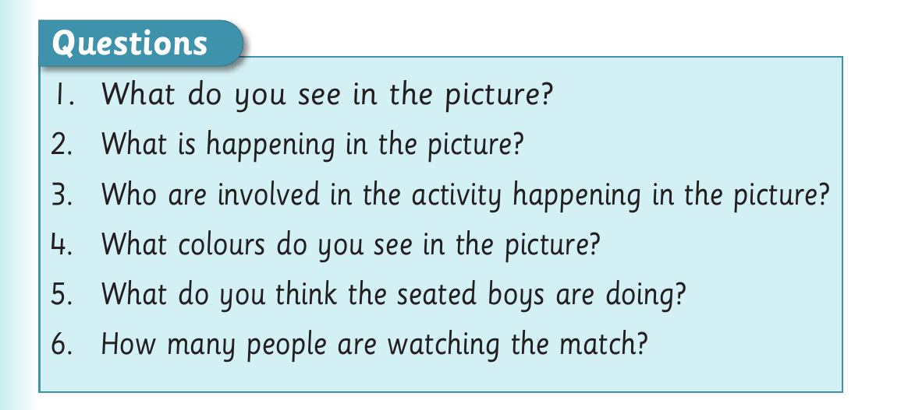

Picture comprehension and football dialogue

Questions 1. What do you see in the picture? 2. What is happening in the picture? 3. Who are involved in the activity happening in the picture? 4. What colours do you see in the picture? 5. What do you think the seated boys are doing? 6. How many people are watching the match?
2. Act out the dialogue and answer the questions that follow: Baraka: Hello, Furaha. Furaha: Hello, Baraka. Baraka: How are you? Furaha: I am fine, how are you? Baraka: I am fine, thank you. Did you watch the football match yesterday? Furaha: Yes, I did. What about you? Baraka: No, I didn’t. Can you tell me about the match? Furaha: Yes, of course. I enjoyed it a lot. It was between Stream A and Stream B of Standard Two girls. Baraka: What! Do the girls play football? Furaha: Yes, they do. They did yesterday and the match was very good. Baraka: Who won the match? Furaha: Stream A.